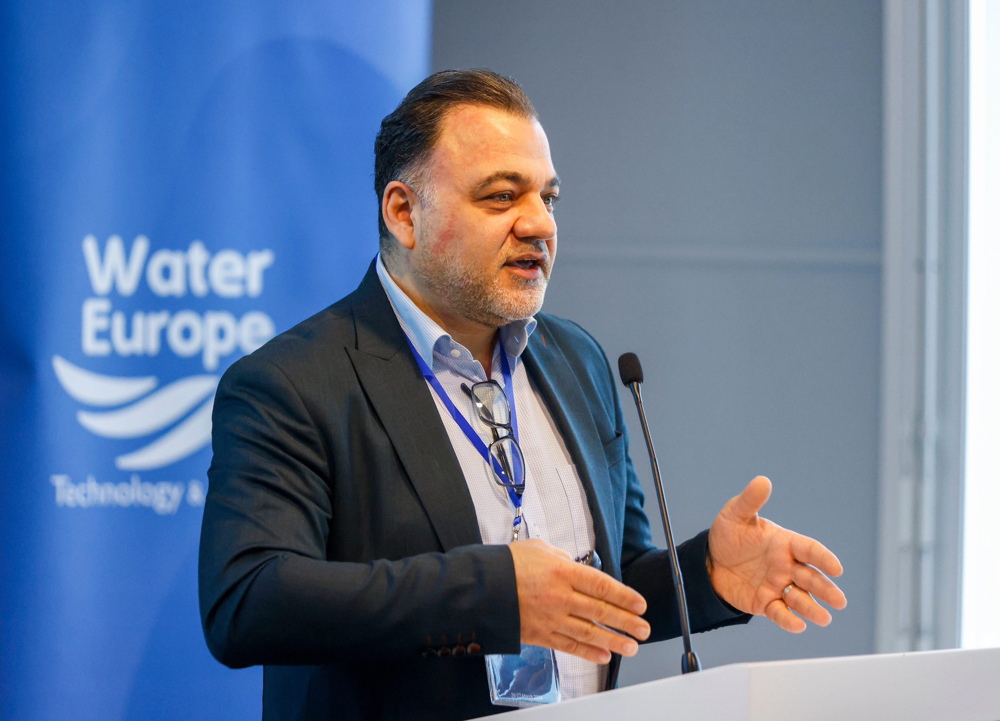
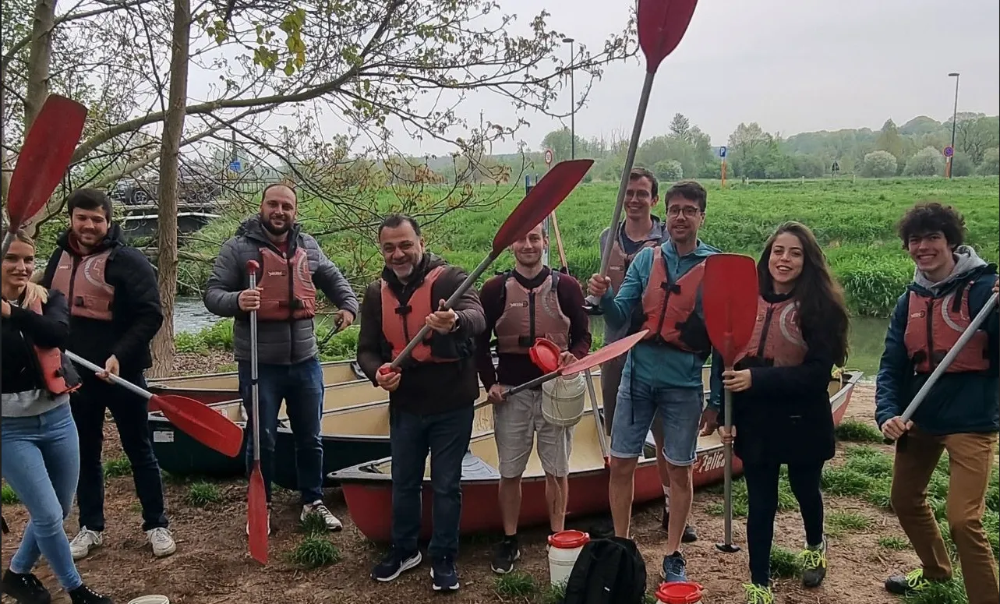

About
Belgian water technology with a staged path from research to field deployment.
HydroVolta’s public story should combine ambition with discipline: institutional research collaboration, EIC support, patent protection, field pilots and a clear commercial pathway.

Company
Built around difficult water sources.
HydroVolta NV was established in Leuven, Belgium, to develop high-recovery alternatives to conventional high-waste treatment approaches for brackish groundwater, hard water and saline sources.
The company’s technology and systems should be presented through documented capability, pilot-led validation and clearly labeled project stages.
Company snapshot
HeadquartersLeuven, Belgium
Core technologySonixED™
Modular platformSalinBloc™
Brine pathwayBPED pilots
Institutional ecosystemVITO, CNR and others
Funding supportEIC Accelerator grant
People and assets
Use people and equipment to build trust.
The old site has useful human and technical assets. The new site should use them to show real capability without overclaiming maturity.

Applied project work

Field equipment
Institutional partners and backing